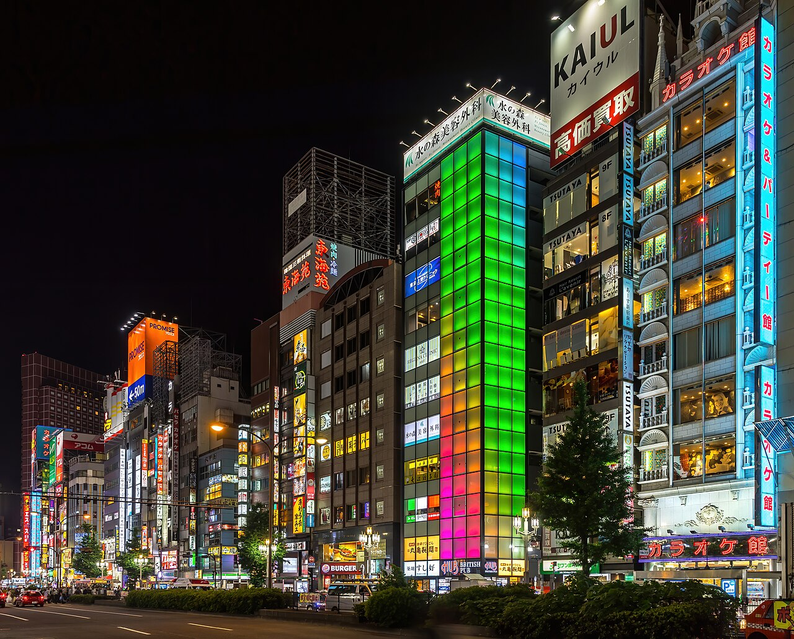
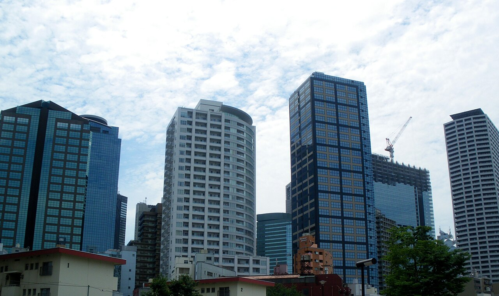
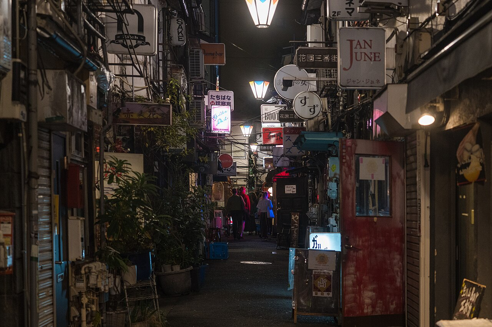

Tokyo's busiest district and your first-night playground: neon canyons, the world's busiest train station, and food and nightlife stacked floor over floor. Loud, bright, and alive well past midnight.



Tokyo's biggest entertainment quarter, all neon and noise. The giant Godzilla head roars over the Toho building.
A cramped, lantern-lit alley of tiny yakitori counters, smoke and beer since the postwar years.
Six narrow lanes packed with around 200 pocket-sized bars, each seating just a handful. Pure atmosphere.
Free observation decks on the 45th floor, 202m up, with a wide city view and Mt. Fuji on a clear day. Costs nothing.
A huge, calm landscaped park a few minutes away when the neon gets to be too much.
The basement food floors of Isetan and the big department stores, a wonderland of takeaway treats.